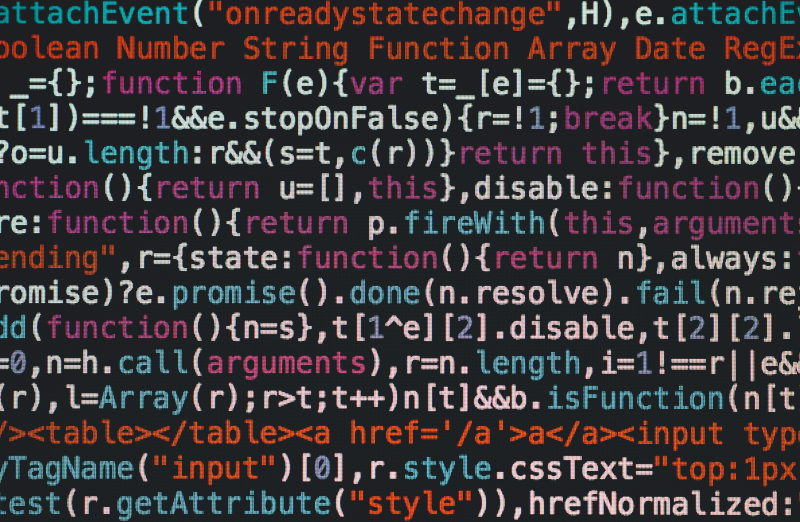

Jeg hedder Casper og kan tilbyde unik tværfaglig viden, da jeg har indsigt i både jura og kodning. Jeg vil gerne arbejde i krydsfeltet mellem jura og teknologi.
Projekter
Her kan du orientere dig om mine projekter.
Swiper JS
Se en slider med en 3d agtig effekt kodet i swiper JS, som jeg har lært at kende ved siden af studierne i multimediedesign. Træk i billederne på siden, som knappen fører til og se effekten.
Hjemmeside
Her ses en hjemmeside til en tøjbutik.Hjemmesiden er udviklet med teknologien Wordpress.
Landing Page
Se her en landing page til en tøjbutik. Landing pagen er udviklet med html, css , jquery og javascript.
Burgermenu
Se her en burgermenu, hvor burgermenuen vises på mobil. Besøgende på desktop skal på siden, som knappen fører til, trykke på f12 og dernæst ctrl (cmd MAC) shift m og vælge mobil.
Eyetracking
Undervejs i mine studier i multimediedesign har jeg prøvet at arbejde med avanceret UX i form af eyetracking. Eyetracking måler, hvor brugeren sig på en skærm. Se videoen for et eksempel på eyetracking.
Vejrapp
Som led i min undervisning på Multimediedesign har jeg udviklet en vejrapp i Bootstrap og Jquery.
CV
Her kan du orientere dig om mine uddannelser m.m.
Jura
2013:Akademiuddannelse i personalejura, Copenhagen Business Academy, cph City. 2012:Cand.jur: Københavns Universitet 2009:Ba.jur:Københavns Universitet.
Multimediedesign
2019-2020: Zealand Erhvervsakademi uafsluttede studier i Multimediedesign. Jeg studerede på avanceret digital udvikling.

Erhvervserfaring
Klik på knappen nedenunder for at se min erhvervserfaring.
0.6.09-2016-05.12-2016: Jurist hos Wuxus A/S.
15.08-2013-14.02-2014: Jurist hos Køge Kommune.
09.05-2016 _ : Vinmand hos Salling Group, Føtex Ølbycentret.
Kompetencer
Klik på knappen for at se mine kompetencer.
HTML, CSS, Bootstrap, Javascript, Jquery, React, Wordpress
Visual Studio Code
Adobe XD, Photoshop
It-ret, Immaterialret, Ansættelses - og arbejdsret, Kontraktret
Kontakt
Du kan kontakte mig på følgende måder:
Mobil
51 22 79 93
Jeg svarer snart.